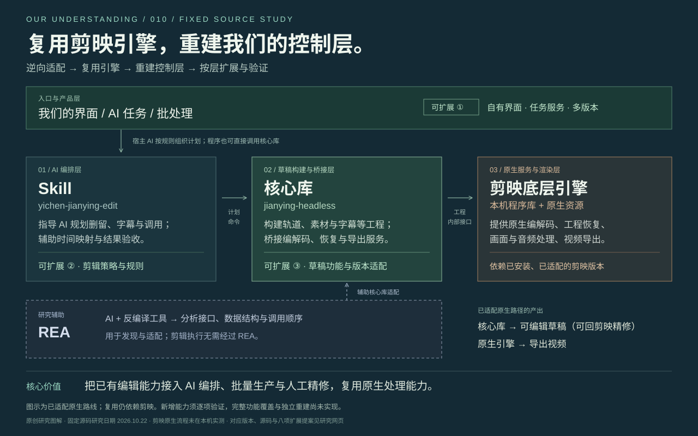

Skill
yichen-jianying-edit给宿主 AI 操作规则与辅助脚本：
规划删留、字幕、时间映射和验收。
OUR UNDERSTANDING / 010
通过逆向适配，把剪映已有能力变成
程序和 AI 可以编排的工具。
输入素材、剪辑目标与参数；自动化也可以直接调用核心库。
给宿主 AI 操作规则与辅助脚本：
规划删留、字幕、时间映射和验收。
构建轨道、素材与字幕等工程数据；
桥接编解码、工程恢复与导出服务。
继续提供原生编解码、工程恢复、
画面与音频处理、视频导出能力。
核心库 → 可编辑草稿可交回剪映界面继续精修原生引擎 → 导出视频
把已有编辑能力接入 AI 编排、批量生产与人工精修，复用原生处理能力。
范围：图示为已适配的原生路线。接口复用仍依赖剪映；新增能力须逐项验证，完整功能覆盖与独立重建尚未实现。版本范围 ↗源码依据 ↗保存总览图 ↓
01 / 我们形成的理解
把功能、控制方式和实现来源分开，
才能判断这个方向真正节省了什么。
剪映界面、AI 无界面与独立重建，对底层能力的依赖各不相同。
素材、删留、字幕与音量要求
组织计划、生成草稿、调用内部服务
复用已安装引擎的恢复与导出能力
替换操作入口与编排方式，内部工程服务和渲染引擎仍由剪映提供。
在已适配的 Mac 无界面流程中，项目自己的程序连接本机剪映程序库，调用内部工程恢复和导出服务。原生渲染使用的是剪映已有实现。[源码依据]
人用界面操作的步骤，可以由结构化计划、草稿生成、命令调用和结果校验来编排；上层也可以接 AI、批处理或自有界面。原来的剪映界面仍能用于精修草稿。
复用引擎需要弄清调用方法和数据结构。完全脱离剪映，还要自行实现相应的处理算法、渲染后端和资源体系。REA 能辅助研究，两种目标都需要逐项验证。
“剪映有这项能力” → “我们已弄清调用链” → “项目已实现并验证”
这三个阶段不能相互替代。“覆盖大部分本地能力”可以作为研究目标，尚不能当作现成结论。02 / 从计划到结果
点击步骤，查看输入、产物、关键工作与源码位置。
这里解释已核对的 Mac 路线。
需要在剪映中继续编辑时，再登记到本机首页；原生导出可以直接使用已验证的快照。桥接程序仍依赖匹配的剪映程序库、初始化环境与资源。
03 / 各项目的分工
两个项目已做本地保全。
另两个用于理解 Windows 和逆向分析路线。
| 项目 / 所在层 | 它提供什么 | 仍依赖什么 | 本次研究状态 |
|---|
下面按我们核对的固定版本说明；不同项目的“Windows 支持”含义不同。
| 路线 | 运行后端 | 交付与边界 |
|---|---|---|
| 核心快照 · Mac 11.5.0 / 11.4.2 | 剪映原生程序库 | 可编辑草稿；已审核版本可无界面原生导出 |
| 核心快照 · Mac 11.6.0 | 草稿适配 + 界面导出校验 | 本页固定提交中无界面原生导出仍拒绝；界面导出是另一条路径 |
| 原项目的 Windows 后端 | 独立 FFmpeg | 输出 MP4；不生成可编辑剪映草稿 |
| jy-draftc · Windows 已适配构建 | 本机 videoeditor.dll | 有加载内部引擎和无界面导出的公开实现；需要精确版本匹配 |
Mac 主分支快照：27c2627。Windows jy-draftc 核对版本：11.6.0.14552，对应源码 4f705a9。未合并分支不计作本页固定主分支的已支持能力。
04 / 我们的扩展思路
以下是研究提案，尚未实现。
每个方向都说明复用部分、新增工作与验收方法。
05 / 两条不同的路线
切换目标，看看哪些工作发生变化。
REA 提高分析能力，工程和验证仍要完成。
06 / 证据、版本与保全
页面整理源码观察和公开记录，
不把研究提案写成原生实测结果。
核对草稿构建、编解码、引擎导出和版本门禁；两个仓库的 bundle 已从本地独立恢复，引用与文件校验通过。
约 50.23 秒、23 轨、154 段的公开案例完成了原生保存重开和 1507 帧导出检查；仍有字体、裁切与个别画面差异。
查看对应来源 ↗未在本机运行剪映、验证原生桥接或导出。界面覆盖率、跨机器兼容与全部效果一致性均没有本次实测结论。
为防止上游删除、封禁或访问中断，已保存核心库与整个 yichen-skills（含目标 Skill），并统一打包为本子项目下的离线备份。包内含 Git 历史、源码 ZIP、原许可证、SHA-256 与恢复说明；不含剪映官方引擎或安装包。网页只承载研究说明。查看备份目录与恢复说明 ↗

原创研究内容与图解由本项目整理。上游核心与 Skill 的原创部分为个人学习和非商业使用许可；第三方材料及剪映程序库遵循各自条款。本页不授予额外使用权。